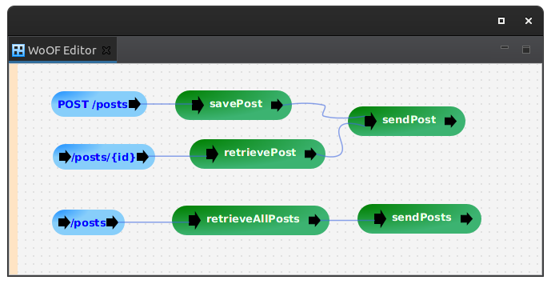

This tutorial demonstrates using CosmosDB to read/write data asynchronously from Azure CosmosDB.
The example used in this tutorial is three end points:
The configuration of the end points are as follows:
With the implementation as follows:
public class CosmosAsyncDbLogic {
public Mono<Post> savePost(Post post, CosmosAsyncEntities entities) {
return entities.getContainer(Post.class).createItem(new Post(UUID.randomUUID().toString(), post.getMessage()))
.map(response -> response.getItem());
}
public Mono<Post> retrievePost(@HttpPathParameter("id") String identifier, CosmosAsyncEntities entities) {
PartitionKey partitionKey = entities.createPartitionKey(new Post());
return entities.getContainer(Post.class).readItem(identifier, partitionKey, Post.class)
.map(response -> response.getItem());
}
public void sendPost(@Parameter Post post, ObjectResponse<Post> response) {
response.send(post);
}
public Flux<Post> retrieveAllPosts(CosmosAsyncEntities entities, ObjectResponse<Post[]> response) {
PartitionKey partitionKey = entities.createPartitionKey(new Post());
return entities.getContainer(Post.class).readAllItems(partitionKey, Post.class);
}
public void sendPosts(@Parameter Post[] posts, ObjectResponse<Post[]> response) {
response.send(posts);
}
}
The CosmosDB entity is as follows:
@CosmosEntity(containerId = "POST")
@HttpObject
@Data
@AllArgsConstructor
@NoArgsConstructor
@JsonIgnoreProperties(ignoreUnknown = true)
public class Post {
private String id;
private String message;
@CosmosPartitionKey
public String getPartitionKey() {
return "same";
}
}
The Cosmos annotations are optional:
The following dependency is required:
<dependency> <groupId>net.officefloor.persistence</groupId> <artifactId>officenosql_cosmosdb</artifactId> </dependency> <!-- Required for testing --> <dependency> <groupId>net.officefloor.persistence</groupId> <artifactId>officenosql_cosmosdb_test</artifactId> <scope>test</scope> </dependency>
CosmosDB is configured in application.objects as follows:
<objects> <supplier source="net.officefloor.nosql.cosmosdb.CosmosAsyncDbSupplierSource"> <property name="cosmos.entity.locators" value="net.officefloor.tutorial.cosmosasyncdbhttpserver.CosmosAsyncDbEntities" /> </supplier> </objects>
For performance reasons, the entities are not dynamically discovered. As Azure starts instances as required, the application must be brought up quickly to service the first request. Having to inspect all jars and classes for entities is typically too slow. Therefore, CosmosDB requires registering all entities with it manually.
Therefore, to make the entities available to CosmosDB, the following is the above configured class:
public class CosmosAsyncDbEntities implements CosmosEntityLocator {
@Override
public Class<?>[] locateEntities() throws Exception {
return new Class[] { Post.class };
}
}
Note: for third party libraries requiring to store data, it is also possible to register entities via a CosmosEntityLocatorServiceFactory. This allows the entities to be automatically registered when the library is added to the class path.
To make local testing easier, the following unit tests demonstrate automatically setting up a local data store for testing.
@Order(1)
@RegisterExtension
public final CosmosDbExtension cosmosDb = new CosmosDbExtension().waitForCosmosDb();
@Order(2)
@RegisterExtension
public final MockWoofServerExtension server = new MockWoofServerExtension();
private @Dependency CosmosAsyncEntities entities;
@Test
public void ensureCreatePost() throws Exception {
// Have server create the post
Post post = new Post(null, "TEST");
MockWoofResponse response = this.server.send(MockWoofServer.mockJsonRequest(HttpMethod.POST, "/posts", post));
response.assertStatus(200);
// Ensure post created
PartitionKey partitionKey = this.entities.createPartitionKey(new Post());
Mono<List<Post>> monoCreated = this.entities.getContainer(Post.class).readAllItems(partitionKey, Post.class)
.collectList();
List<Post> created = monoCreated.block();
assertEquals(1, created.size(), "Should only be one created post");
assertEquals("TEST", created.get(0).getMessage(), "Incorrect post");
}
Note that this will start @zeit/cosmosdb-server within a docker container to emulate CosmosDB. Unfortunately, the Azure provided emulator only runs on windows.
The next tutorial covers integrating PayPal into OfficeFloor.